被问 What 类问题时，最容易犯的错是只给名词，不给句子：问早餐吃什么，答一句 Bread. 就结束了。英语口语的期待是至少一个完整句，最好再加一句评价。
先给答案 — 一句话，用完整句I usually have toast and an egg, and a glass of milk.
再给细节 — 数量、频率、变化On weekdays it's always the same, because I have about ten minutes.
最后给评价 — 喜欢 / 不喜欢 / 想改I'd rather have something hot, but there's never time.
万能第三句：I'd rather…
任何「你现在做什么」的问题，都能用「我其实更想……」来补一句，立刻从描述升级成有态度：
I'd rather have something hot. / I'd rather be doing something else. / I'd rather not talk about that.
——最后这句还能优雅地拒绝回答。
02七种 What 问法，先分清再回答
课本 25 题看起来都是 What 开头，但后面接的东西不一样，期待的回答也完全不一样。先认句型，再想内容 —— 顺序反了就会答非所问。
A · 七种问法对照表
句型
课本题号
在问什么
你要给的答案
What do you usually…?
1, 2, 15
习惯、日常
具体事物 + 频率（usually, most days）
What is your favorite…?
3, 19, 20, 21
偏好，最高级
一个具体答案 + 一句理由。千万不要列一串
What do you want to be / to be doing…?
4, 5, 22, 25
未来的打算
具体计划 + 时间点或原因
What do you think about…?
6, 10, 17, 18, 24
看法，不是事实
立场 + 理由 + 让步。这组题最难，见第 B 节
What do you think are the advantages of…?
8
要你列好处
两到三点，用 first / also / and 串起来
What makes you feel…? / What made…?
9, 11, 12
原因
具体的事，用 makes me feel… 接住
What do you do to…? / What can you do to…?
7, 13, 14, 16
方法、做法
动词开头的具体做法，不用 I think we should
What is the best … you've ever …?
19
最高级 + 现在完成
一个答案 + 为什么它排第一
B · 观点类题（6、10、17、18、24）的三段答法
这五题问的是「你怎么看」，最忌讳只答 I think it's good. 打住。给出立场之后必须补理由，最好再补一句让步。
步骤
英语
作用
1 定立场
Honestly, I'm against it. / I'm all for it. / I'm somewhere in the middle.
一句话让对方知道你在哪一边
2 给理由
The main reason is… / For one thing…, for another…
这是拉开差距的地方
3 给让步
That said, I can see why some people…
显示你想过反面，不是随口表态
「你怎么看 X」不要答成「我不做 X」。
第 17 题问 What do you think about women smoking and drinking?，问的是看法。答 I don't smoke 是答错了。正确方向是
I don't see why it should be any different from men doing it — the health risk is the same.
先回应「题目预设」，再给立场，这个思路非常加分。
第 10、17 题涉及敏感话题，答得体的关键是多用这三个短语：I don't see why… （我看不出为什么……）、I'm not comfortable with…（我对……不太能接受）、It's not my place to judge（轮不到我评判）。最后一个句子在遇到「你不方便评论」的情况时特别好用，它既表达了态度又保持了分寸。
C · 课本例题：一段「教科书级」的观点回答
课本 p.38 的例题 What do you think is the best way to stay healthy? 给了一整段示范答案。它的结构值得拆开看：先承认方法很多 → 再指出多数方法靠不住 → 最后给出自己认定的根本方法。这就是观点类问题的高分模板。
Example
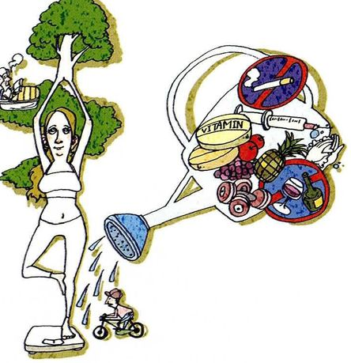
What do you think is the best way to stay healthy?
What you seeA woman balanced in a yoga pose on top of a weighing scale, arms up like branches, next to a small bicycle. To the right, a jumble of things crossed out — vitamin pills, a syringe, cigarettes, wine, sweets, fruit.
What it means问「保持健康最好的办法是什么」。注意 the best way 要的是一个主张，不是一串建议。
Say it like this"There are many ways to stay healthy, and different people pursue different ones. Some take large amounts of vitamins or tonics. Some blindly believe in whatever diet is fashionable — it may be commercially appealing, but that doesn't mean it's medically tested. Nonetheless, I'd say good health starts with weight control, and you get that either by eating moderately or by exercising regularly, or both."
这段里三个可以直接搬走的连接词：Nonetheless（尽管如此）用来转折，blindly believe in（盲目相信）用来批评现象，commercially appealing but not medically tested（商业上吸引人但没经过医学检验）是一个非常漂亮的「对仗式批评」。后者用在你评价任何产品、课程、流行做法时都可以。
03二十五个问题：怎么答出层次
每张卡三段：What you see 照着图描述，What it means 说清这题到底在问什么，Say it like this 给三档答案：① 一句短答 / ② 加原因 / ③ 加一个具体例子。第三档请尽量换成你自己的真事。
01
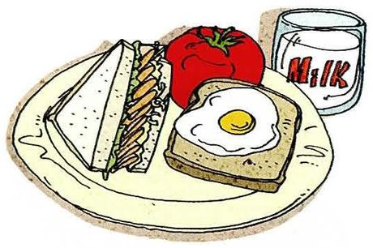
What do you usually have for breakfast?
What you seeA plate with a sandwich, a fried egg and a slice of tomato, plus a tall glass of milk. Simple, quick, Western.
What it means问你早餐通常吃什么。注意介词是 have … for breakfast，不是 eat breakfast food。
Say it like this①Toast and an egg, usually. ②I usually have something quick — a boiled egg, some bread, and coffee. I can't eat much in the morning. ③Honestly my breakfast depends on how late I got up. On a good day it's congee with pickles, which is what I grew up with. On a bad day it's a coffee from the machine downstairs and nothing else, and then I'm starving by eleven and eat a terrible lunch. So breakfast basically predicts my whole day.
02
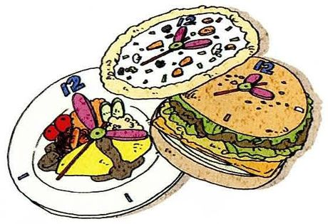
What do you usually have for lunch?
What you seeA big burger and a club sandwich with a side of salad on a plate. More food than one person needs.
What it means问午餐。和第 1 题是同一句型，但答案通常和「环境」有关 —— 你在哪吃决定了你吃什么。
Say it like this①Whatever's in the canteen. ②I eat in the university canteen most days, so it's rice, two dishes and soup. Cheap and not bad. ③Lunch is the one meal I don't think about — I go to the lab canteen with whoever's around, point at two dishes, and pay eight yuan. It's the same rotation every week. On Fridays I treat myself and get noodles somewhere off campus, and that's honestly the highlight of my week.
03
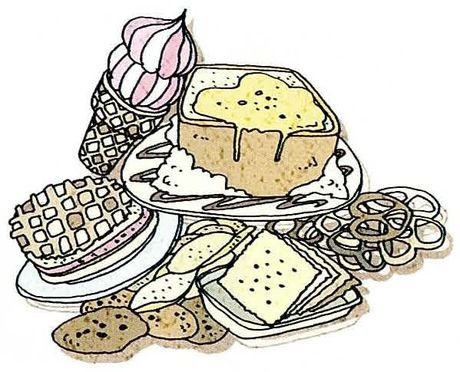
What is your favorite snack?
What you seeA pile of everything sweet — biscuits, a slice of cake, chocolate, a croissant, sweets. An entire snack drawer in one picture.
What it means问最喜欢的零食。favorite 后面接单数 —— 只挑一个。
Say it like this①Chocolate, unfortunately. ②Chocolate, and I'd rather it weren't. I keep a bar in my desk drawer and it never lasts the week. ③Sunflower seeds. It's a very Chinese answer and my lab mates find it funny, but it's perfect for thinking — you can't eat them fast, so it stops me from rushing. The downside is that my desk looks like a birdcage by Friday.
04
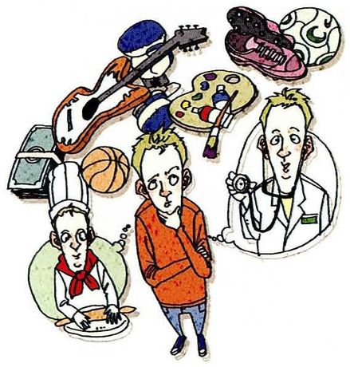
What do you want to be in the future?
What you seeA young man standing in the middle, surrounded by little versions of possible futures — a guitarist, a chef in a white hat, a doctor, an athlete, an artist. All of them at once.
What it means问将来想做什么。注意 What do you want to be 是问职业，不是问「想成为什么样的人」。
Say it like this①A researcher, hopefully. ②I'd like to stay in research — either at a university or in a lab. I'm not sure yet which one suits me better. ③I want to keep doing research, but I've stopped saying "I want to be a professor", because that's a title, not a job. What I actually want is to have one problem that's mine, that I keep working on for years. Whether that happens in a university or a company, I don't much care.
05
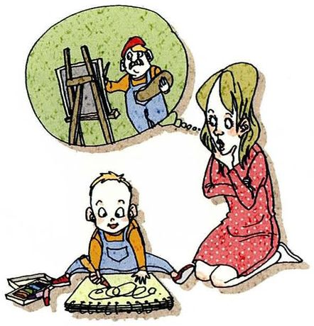
What do you want your kids to be in the future?
What you seeA mother sitting on the floor with a small child playing with blocks, and above her a thought bubble showing a builder up a ladder. She's imagining his future.
What it means问希望孩子将来做什么。这题其实在问你的价值观，不是问职业规划。
Say it like this①Whatever they want, honestly. ②I'd want them to do something they don't dread on Monday morning. That's it — I don't have a profession in mind. ③I'd like them to be independent, more than successful. My parents pushed me towards the safest option at every step, and it worked, but I sometimes wonder what I'd have tried if nobody had been worried. So — I'd want to be the parent who says "try it" instead of "be careful". Though I say that now, with no children.
06
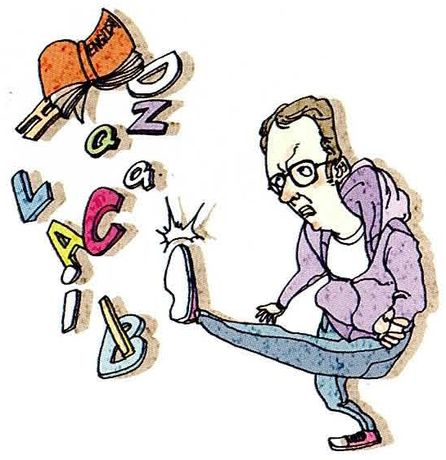
What do you think about giving up on English?
What you seeA woman bent double, carrying a huge jumble of letters on her back — and a boot is pressing down on her. English is literally crushing her.
What it means问「你怎么看放弃英语这件事」。give up on sth = 对某事彻底放弃。
Say it like this①I think it's a mistake, honestly. ②I understand the feeling, but giving up seems short-sighted. The reason it feels hopeless is usually that people are studying the wrong way. ③I've thought about it. Ten years of studying and I still freeze when someone speaks to me — that's demoralising. But the thing I've noticed is that people who "give up" usually give up on exams, not on the language. They still watch shows and read papers in English. So maybe the real question isn't whether to give up, but what you were doing it for in the first place.
07
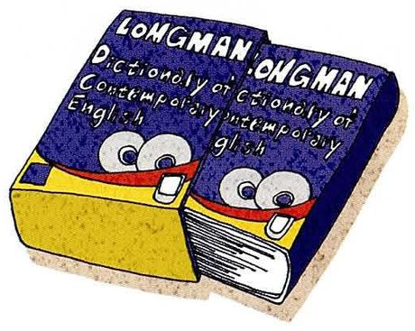
What do you do to improve your English?
What you seeA thick Longman dictionary with big cartoon eyes on the cover, looking straight at you. The old-school method.
What it means问你怎么提高英语。do to improve —— 要的是做法，不是想法。
Say it like this①Mostly reading and this class, honestly. ②I read papers in my field every day, which helps with vocabulary but not with speaking. So I've started talking to myself — describing what I'm doing while I cook. ③The thing that changed it for me was switching from studying English to using it. I stopped memorising word lists and started reading what I'd read anyway, just in English. My vocabulary grew slower but it stuck. For speaking, the only thing that's worked is embarrassing myself regularly — this class is doing more for me than five years of apps.
08
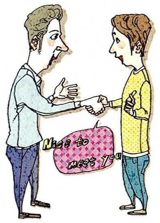
What do you think are the advantages of having a good command of English?
What you seeTwo men shaking hands, and between them a pink speech bubble saying Nice to meet you. The advantage is happening right there.
What it means要你列好处。注意 command of a language = 对语言的掌握程度，是很地道的说法。
Say it like this①Two things: information and people. ②First, you get access to information that never gets translated — most of my field's work is only in English. Second, you can actually talk to people at conferences instead of standing there smiling. ③The obvious answer is career, and that's true. But the advantage I didn't expect is that it changes how I think. When I read something in English I can't skim the way I do in Chinese — I have to actually follow the argument. That's made me a more careful reader, and I'd say a more careful thinker, in both languages.
09
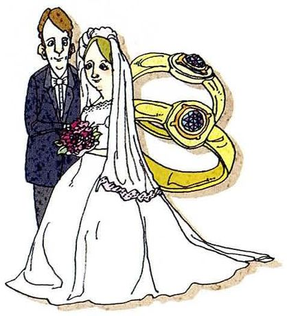
What made your parents get married?
What you seeA bride in a white dress and a groom in a dark suit, standing beside two enormous golden wedding rings. The question is about the reason, not the ceremony.
What it meansmake sb do sth → what made them get married：是什么让他们结婚的。问原因，不是问经过。
Say it like this①They were introduced, I think. ②They were set up by a colleague — that was normal then. They met twice, decided, and that was that. ③I asked my mum this once and her answer was very practical: he had a stable job and wasn't a drinker. Not romantic at all. But they've been married thirty years and still do everything together, so maybe the practical reasons weren't the wrong ones. I've never quite worked out whether that's comforting or slightly sad.
10
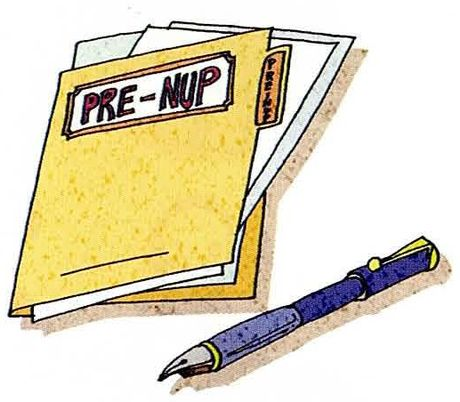
What do you think about prenuptial agreements?
What you seeA yellow document folder with PRE-NUP typed on it, and a fountain pen lying beside it, ready to sign.
What it means婚前协议。课本脚注解释为「男女婚前就离婚时如何分配财产达成的协议」。这是观点题，必须表态。
Say it like this①I can see both sides. ②Logically it makes sense — you're protecting both people. Emotionally it's harder, because raising it sounds like you're planning for the end. ③I'm not against them, but I think they're a symptom of something else. If two people can't have a difficult conversation about money before they marry, that's the real problem — the document isn't. That said, I can see why someone with a business or children from a previous marriage would want one. In that case it's not distrust, it's just being organised.
11
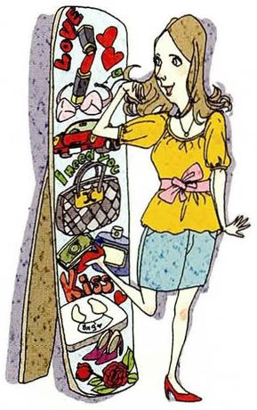
What makes you feel happy?
What you seeA woman standing at an open fridge that is absolutely packed — fruit, vegetables, bottles, a cake. Everything you could want, all at once.
What it means什么让你觉得开心。make sb feel + 形容词，注意 feel 后面接形容词不接名词。
Say it like this①Small things, mostly. ②A clean desk and a free morning make me happier than anything expensive. I need the space more than I need the thing. ③Finishing something. Not starting it — finishing. The moment a paper is submitted or a piece of code finally runs, there's about ten minutes where I feel genuinely good, and then I immediately find the next problem. So happiness for me is quite short and very repeatable, which I suppose is lucky.
12
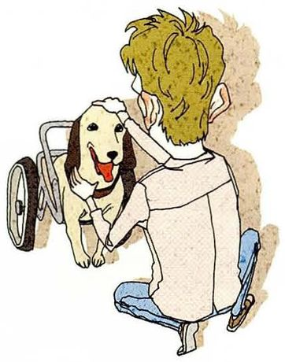
What makes you feel sad?
What you seeA man kneeling on the floor beside a dog that has a small wheelchair where its back legs should be. He's got his hand on the dog's head.
What it means什么让你难过。和第 11 题是一对，答题结构一样，但语气要收一点。
Say it like this①Seeing animals in pain, honestly. ②Anything to do with animals suffering gets me, and I can't watch those charity adverts. It's not rational — I know human suffering should matter more. ③The thing that actually gets me is people giving up quietly. Not dramatic failure — someone who was good at something and just stopped, and nobody noticed. I find that much sadder than obvious tragedy. Maybe because I'm afraid of it happening to me.
13
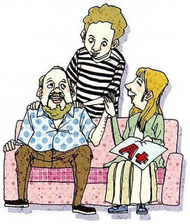
What do you do to make your parents happy?
What you seeA young man standing behind his parents, who are sitting together on a pink sofa. He's leaning over them, the three of them close.
What it means问你怎么让父母高兴。注意 do to make sb happy —— 要具体做法。
Say it like this①I call them, mostly. ②I call every Sunday, which sounds small but they plan their week around it. Beyond that, I just tell them things are going well. ③Honestly? I let them think I'm doing better than I am. Not lying — just not mentioning the failed experiments. My mum worries, and there's nothing she can do about my research anyway, so telling her everything would only make one of us feel better. The other thing is that I ask her advice about cooking. She knows I don't need it, but she likes being needed.
14
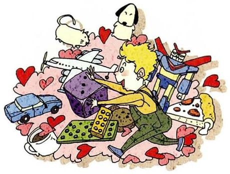
What do you do to make your friends happy?
What you seeA person sitting in the middle of a pile of presents — a wrapped box, a laptop, cards, flowers, hearts everywhere. Giving, generously.
What it means问你怎么让朋友开心。和第 13 题对照着答，能显出对不同关系的理解。
Say it like this①I remember the small things. ②I'm the one who texts on the day of their interview, or remembers they hate coriander. It's cheap and it works. ③I show up. That's the whole strategy — I'll travel an hour for a bad dinner because someone asked. Presents I'm bad at; I always buy the thing I'd want. But being there, physically, on a Tuesday night when they've had a bad day — that seems to count for more than anything I could wrap.
15
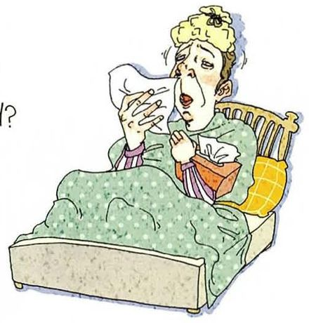
What do you usually do if you have a cold?
What you seeA woman sitting up in bed with a duvet, hair a mess, blowing her nose into a tissue. Classic cold.
What it means感冒了通常怎么办。注意英语说 have a cold / catch a cold，不是 get a cold 以外还有 a cold 要带冠词。
Say it like this①Sleep, water, and nothing else. ②I sleep as much as I can and drink hot water with lemon. I don't take medicine unless it's really bad. ③I used to just push through it — go to the lab, do a bad job, and stay sick for two weeks. Now I take one full day off at the start, which feels lazy but actually shortens it. My supervisor noticed and now he does the same, which is either a good influence or a bad one, depending on your view of productivity.
16
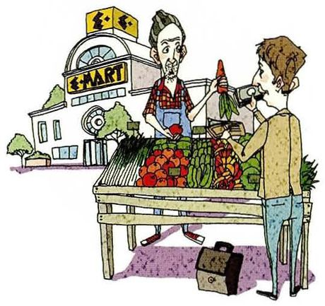
What can you do to help the poor?
What you seeA man at a small street stall buying vegetables from a vendor, with a supermarket building behind them. Buying from the small seller instead of the big shop.
What it means你能为穷人做什么。注意 can —— 问的是你实际能做到的，不是宏大理想。
Say it like this①Give regularly, and buy local. ②I donate a small amount every month, and I try to buy from the small stalls near me rather than the big supermarket. It's not charity, it's just where the money goes. ③As an individual there's a limit — I can give money, and I do, but it's a drop. The thing I could actually do that would matter is use what I'm trained for. If I end up building something that helps people who can't afford the expensive version, that's worth more than anything I'd put in a donation box. Though that's also a convenient thing to believe, because it costs me nothing today.
17
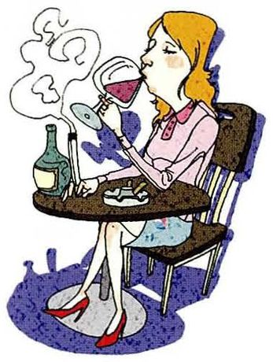
What do you think about women smoking and drinking?
What you seeA woman sitting alone at a small café table, a cigarette in one hand and a glass of wine in the other, smoke drifting up.
What it means注意这题问的是看法，而且是带预设的看法 —— 它特地加了 women，暗示这可能是个有争议的话题。
Say it like this①I don't see why it should be any different from men doing it. ②The health risk doesn't depend on gender, so I don't think the standard should either. What I do object to is smoking anywhere near other people. ③I'd answer the question behind the question. If you're asking about health, it's bad for everyone equally. If you're asking about manners — which is usually what this question is really about — then I think we still hold women to a different standard, and I don't think that's fair. Where I do have a strong view is second-hand smoke, because that affects people who didn't choose it. That's the line for me, not gender.
18
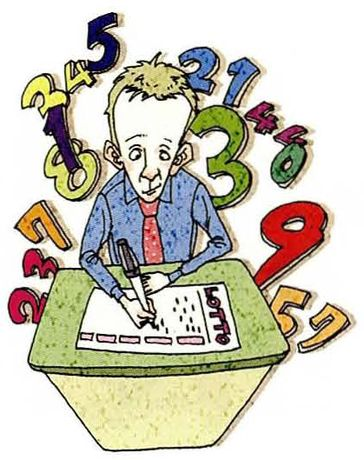
What do you think about buying lottery tickets?
What you seeA man at a table filling in a lottery slip with a pen, surrounded by huge floating numbers and digits. He's picking his numbers carefully.
What it means你怎么看买彩票。观点题，可以算一笔账，也可以讲心理。
Say it like this①Harmless in small doses, I suppose. ②I don't buy them, because the maths is terrible. But I understand why people do — it's not really about the money, it's about having something to hope for. ③I'd separate the two kinds of buyers. Someone spending five yuan a week for the pleasure of imagining is buying entertainment, and that's fine. Someone spending money they need is being sold a false hope, and that's not fine. The problem isn't the ticket, it's who's selling it and to whom — the adverts are always placed where people are most desperate.
19
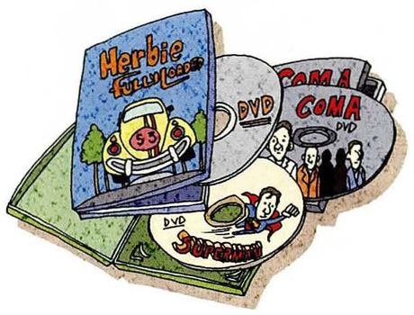
What is the best movie you've ever seen?
What you seeA messy stack of DVDs and film cases — one says Herbie, another DVD. A whole shelf of possibilities.
What it means你看过最好的电影。the best … you've ever seen 是最高级 + 现在完成时，注意时态。
Say it like this①Forrest Gump, probably. I know it's a cliché. ②It's a hard question because "best" changes. Let's say Spirited Away — I've seen it five times and it's different every time. ③I'd pick Interstellar, and I know that says more about me than about the film. It's not the most subtle movie ever made, but there's a scene where a man watches twenty-three years of messages in three minutes, and I think about it constantly. I only noticed on the second viewing that nobody in that scene speaks.
20
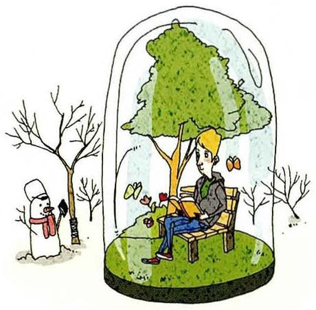
What is your favorite season?
What you seeA man sitting under a leafy green tree, reading a book, inside a glass dome — and outside the dome, a bare winter tree with snow. He's chosen his season.
What it means最喜欢的季节。注意英语的 season 也指「赛季」「旺季」，这里显然指四季。
Say it like this①Autumn, easily. ②Autumn — it's the only season where the weather is neither trying to kill me nor making me sweat. ③Autumn, and the reason is embarrassingly practical: everything about my life is better when it's cool. I work better, I sleep better, I'm nicer to be around. Spring is supposed to be the romantic answer but in my city it rains for six weeks and everything smells damp. Autumn has about four perfect weeks — and I like that it's short.
21
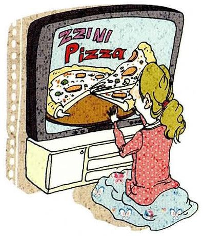
What is your favorite food?
What you seeA woman kneeling in front of an old television, watching an advert for pizza, and she's clearly hungry. The TV is selling her dinner.
What it means最喜欢的食物。和第 3 题（snack）不同，这里问的是正餐。
Say it like this①Dumplings. My grandmother's, specifically. ②Dumplings, but it has to be the ones my family makes. The frozen ones don't count and I'll argue about this. ③Hotpot. And the reason isn't really the taste — it's that hotpot requires people. You can't eat it alone, it doesn't work. So when I say hotpot is my favorite food, what I mean is that I like the evenings it comes with. I've never once made it just for myself.
22
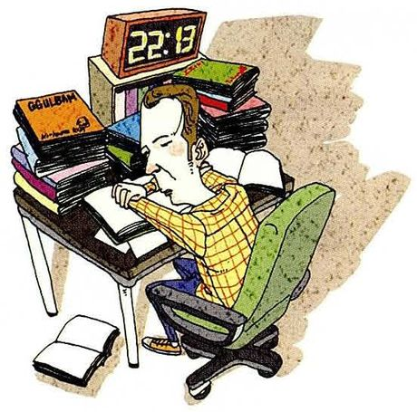
What are you going to be doing at 10:00 pm tomorrow?
What you seeA man at a desk stacked with books and papers, writing, with a clock above him reading 22:18. Same desk, same time, again.
What it means明天晚上十点你会在干什么。注意 are going to be doing 是将来进行时，问的是「那个时间点正在做什么」。
Say it like this①Probably at my desk, honestly. ②I'll be in the lab — that's when it's quiet and I get my reading done. Not glamorous, but it's the truth. ③If I'm honest, I'll be doing roughly what I'm doing now — reading something with a pencil in my hand, wondering why I'm not asleep. I keep telling myself I'll have a life after this degree. But at ten in the evening the lab is the only place that's still open and still worth being in, so here I'll be.
23
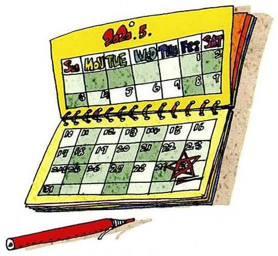
What is the most important thing for you to do this year?
What you seeAn open desk calendar with dates marked, and a red pen beside it. Some days are already circled.
What it means今年对你最重要的一件事。注意是 this year，范围明确，别答成人生目标。
Say it like this①Get my first paper out. ②Finishing and submitting my first paper. Everything else this year can slide; that one can't. ③Submit my first paper — but the important part isn't the paper, it's finishing something. I've started four projects and shipped none, and I've started to notice that I'm more comfortable starting than ending. So the thing I actually need to learn this year is how to be bored by a project and keep going anyway.
24
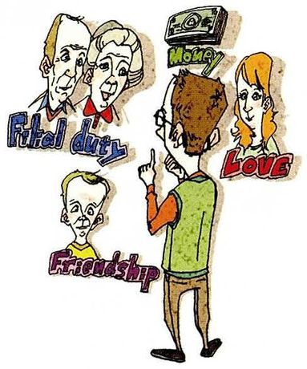
What do you think is the most important thing in life?
What you seeA man standing and pointing at four little figures floating around him, each labelled — Love, Health, Money, Friendship. He has to choose.
What it means人生中最重要的是什么。纯观点题，最难，也最能看出一个人的表达水平。
Say it like this①Health, because everything else depends on it. ②Health. It's the boring answer, but it's the one that's true — you can lose the other three and recover, but you can't get your body back. ③I used to say love without thinking about it. Now I'd say health, and I'm suspicious of that answer because it's what everyone says in their thirties. But the real reason I changed my mind is that I watched someone close to me get sick, and I noticed that everything else rearranged itself around that without anyone deciding to. So it's not a philosophical position, it's just what I saw.
25
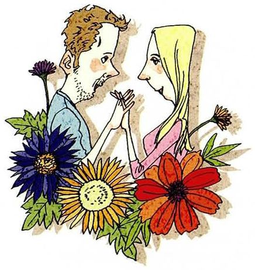
What are your future plans?
What you seeA man and a woman facing each other among big colourful flowers, close together. Their plan seems to include each other.
What it means你未来的打算。范围比第 23 题大，比第 4 题小，可以分短中长期说。
Say it like this①Finish the degree, then decide. ②Short term, finish my thesis. Medium term, I'd like a postdoc abroad — partly for the research, partly because I've never lived anywhere else. ③I've stopped making five-year plans, because mine have all been wrong. What I have now is a direction and a rough order: finish the PhD, spend a few years somewhere else, then decide whether to stay in research or go into industry. The one thing I'm sure about is that I want to keep working on this problem — everything else is negotiable.
04重点词汇（美式音标）
课首页脚注给了 10 个词，都是这一段里真正会用到的抽象词。第三列是它们在句子里的样子。
A · 课本脚注的 10 个词
词
音标
课上怎么用
中文
pursue
/pərˈsuː/
pursue a career / pursue many ways 追求、从事。比 try 正式
追求
tonic
/ˈtɑːnɪk/
vitamins and tonics 补品。也可以说 dietary supplement
补品
blindly
/ˈblaɪndli/
blindly believe in sth 盲目地。批评现象时很好用
盲目地
diet
/ˈdaɪət/
be on a diet / a fad diet 注意：diet 也可指「日常饮食」
节食 / 饮食
commercially
/kəˈmɜːrʃəli/
commercially appealing
商业上
appealing
/əˈpiːlɪŋ/
It sounds appealing, but…
吸引人的
nonetheless
/ˌnʌnðəˈles/
Nonetheless, I'd say… 尽管如此。比 but 正式，写作口语都能用
尽管如此
give up on
/ɡɪv ʌp ɑːn/
give up on English 对某事彻底放弃。give up smoking 是戒，别混
放弃
command of
/kəˈmænd əv/
a good command of English 对语言的掌握。很地道，背下来
掌握
prenuptial agreement
/ˌpriːˈnʌpʃl əˈɡriːmənt/
sign a prenuptial agreement 口语常缩成 prenup /ˈpriːnʌp/
婚前协议
B · 观点表达的核心词
词
音标
课上怎么用
中文
I'm all for it
/aɪm ɔːl fər ɪt/
我完全支持。反义 I'm against it
我完全赞成
somewhere in the middle
/ˈsʌmwer ɪn ðə ˈmɪdl/
两者之间 —— 立场模糊时最好用的一句
介于两者之间
I don't see why…
/aɪ doʊnt siː waɪ/
I don't see why it should be different. 温和地质疑前提
我看不出为什么
I'm not comfortable with
/aɪm nɑːt ˈkʌmftərbl wɪð/
我对……不能接受。比 I hate 温和有力
我不能接受
It's not my place to judge
/ɪts nɑːt maɪ pleɪs tə dʒʌdʒ/
轮不到我评判。遇到不方便表态时的得体说法
不该由我评判
That said
/ðæt sed/
话虽如此 —— 引出让步，非常常用
话虽如此
for one thing
/fər wʌn θɪŋ/
For one thing, it's expensive. 引出第一个理由
一来
the question behind the question
/ðə ˈkwestʃən bɪˈhaɪnd/
问题背后的问题 —— 高级表达，用一次就会被记住
话外之意
C · 这一课常用的动词块
表达
音标
用法
中文
make sb feel
/meɪk ˈsʌmbədi fiːl/
It makes me feel like I'm wasting time. 后面接形容词或 like
What did you learn about yourself from these questions?
That my answers were all quite practical. When you asked about the best way to stay healthy, I talked about weight and exercise — nothing about how I actually feel. Same with the important thing in life. I think I default to measurable answers because they feel safer, which is probably worth noticing.
这是把整节课当素材来复盘，老师会觉得你在认真思考。I default to measurable answers 这种自我观察很高级。
Which question was hardest to answer, and why?
The one about women smoking and drinking. Not because I don't have a view — I do — but because I wasn't sure whether the honest answer would sound preachy. It's much easier to answer questions about breakfast than questions with a hidden argument in them.
questions with a hidden argument in them 这个说法准确又有洞察力，比说「这题很难」有价值得多。
Do you think your answers would be different in Chinese?
Some of them, yes. In Chinese I'd be much more careful about the question on women smoking — I'd probably give a softer answer, because there's a social expectation there. In English I feel freer to just state a position, which is either honesty or just a lack of fluency making me blunt.
最后那个自我怀疑（either honesty or just a lack of fluency）非常真实，而且显示你有元认知能力。老师会很喜欢这种回答。
Is there any question here you'd refuse to answer?
Refuse, no. But I'd push back on the one about my parents' marriage — that's their story, not mine, and I'd feel odd turning it into an anecdote for a lesson. I'd answer it, but I'd keep it general.
「不会拒绝，但会换个说法」——这个分寸感是母语级的表现。同时给出了一个可用的句式：that's their story, not mine。
If you could ask me one of these questions, which would it be?
The English one. What do you do to keep your English good, now that you're not studying it? I ask because my teachers always said it'd fade, and I want to know if that's actually true for someone who lives in it.
Part II 其实是「学会提问」的铺垫（Part III 才是主体）。主动反问一句，是 1v1 课上最划算的动作。
How would you answer "what do you think is the best way to stay healthy" differently from the textbook?
The textbook is more confident than I'd be. It announces that good health "starts with weight control", full stop. I'd hedge more — I'd say that depends on your age and your body, and for someone my age sleep is probably a bigger factor than weight. But I admire how clean the argument is; it's one paragraph and you can't disagree with the structure of it.
学会评价课本本身，而不是照抄。这类回答在口语课里属于「超纲加分项」。
06这节课最容易犯的错
这一课的错误集中在两处：一是答非所问（把看法题答成事实题），二是 What 类句型的语序。
✗What you think about prenuptial agreements? ✓What do you think about prenuptial agreements?
What 后面要跟助动词 do。这是中国学生最顽固的语序错误之一，说快了就会漏。
✗What is your favorite food is dumplings? ✓My favorite food is dumplings. / Dumplings are my favorite.
问句和被问句被混在一起了。要么保持问句形式（What is your favorite food?），要么答完整句。别把两个缝在一起。
✗What makes you feel happy is my family. ✓My family makes me happy. / What makes me happy is my family.
主语和宾语颠倒了。如果要用 What 开头，后面必须是 makes me（不带 you）。
✗I think the movie which I best have seen. ✓The best movie I've ever seen is…
「我看过最好的」用最高级 + 现在完成时，而且 the best movie I've ever seen 是固定语序，不用 which。
✗I very like hotpot. ✓I really like hotpot. / I love hotpot.
very 不能修饰动词。这是老问题了，但这一课全是「喜欢什么」，会反复说。
✗Eating dumpling is my favorite. ✓Dumplings are my favorite. / My favorite food is dumplings.
可数名词不能光秃秃用（dumpling → dumplings）。另外「吃饺子」是动作，不能说它是 favorite food。
✗I have a cold, so I eat medicine. ✓I have a cold, so I take medicine.
吃药说 take medicine，不是 eat。这是中式搭配的经典错误。
✗In the future I will be a researcher, because I like research and I think research is very important for our country. ✓I want to stay in research, probably at a university — I like the part where a problem takes years.
第一句是典型的「作文腔」：宏大、抽象、没有个人细节。口语课要的是第二句那样的具体理由。